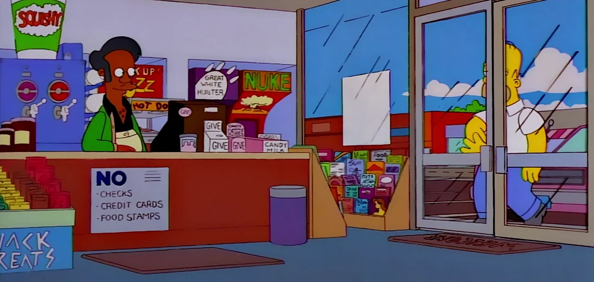
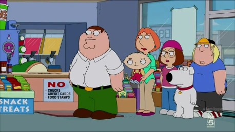
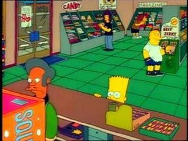
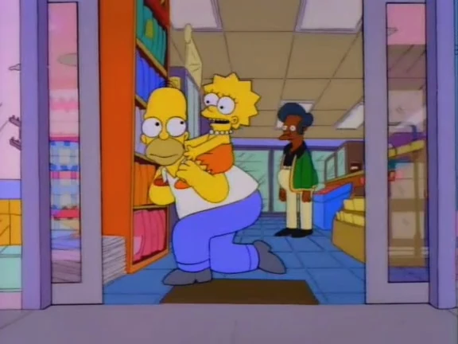
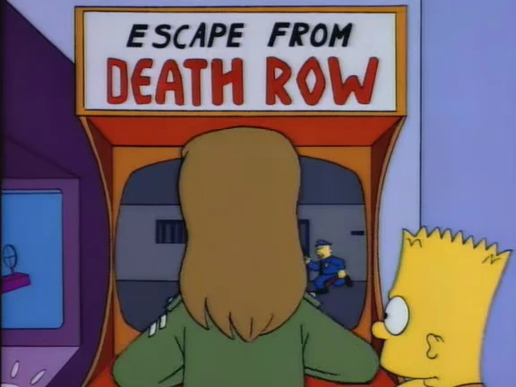
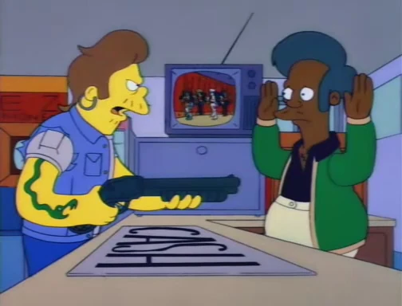
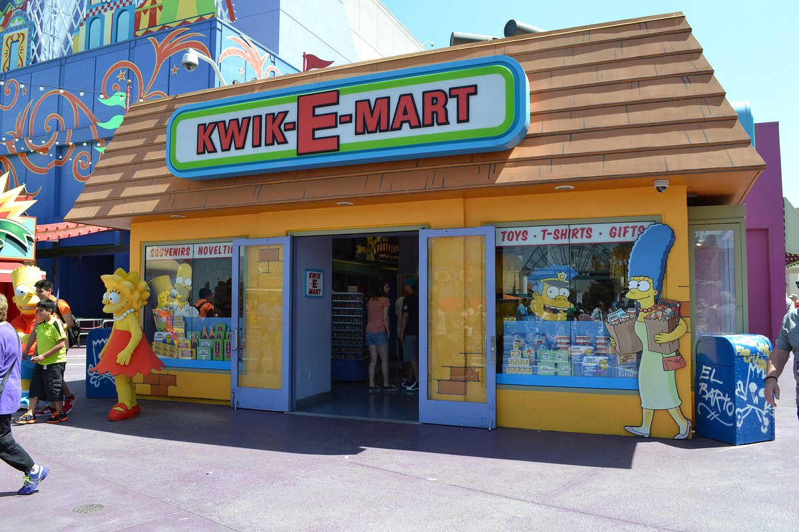

Kwik-E-Mart
Kwik-E-Mart is Springfield's famous convenience store owned by Apu Nahasapeemapetilon. It is open 24 hours a day, sells Squishees, Buzz Cola, snacks, and oddball items, and is one of the show’s most iconic community landmarks.

Apu working the register

Busy checkout line

Bart shopping inside the store

Homer and Lisa at the entrance

Retro arcade machine in the shop

A tense robbery moment

Store exterior facade